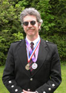

Robert O'Connor - Bagpiper
For any and all inquiries please contact : piper@rocbrooklyn.com
Robert O'Connor is a bagpiper with over 20 years of experience performing on the Great Highland Bagpipes and he is familiar with the repertoire of traditional Scottish and Irish music for the pipes. He is available for hire as well as bagpipe tuition in southeast New England.
He is a former member of three pipe and drum bands in New York:
- the Clan Gordon Highlanders Pipe Band in Glen Cove, NY
- the Siol na h'Eireann Pipe Band in Selden, NY
- the Thomas O'Shaughnessy Memorial Pipe Band in Long Island, NY
Please see my entry on bagpiper.com for ratings, references and comments!

More recently he has performed as a competition solo piper at EUSPBA events in New York, Connecticut and Rhode Island. In 2007 he competed at the Scottish Games in Goshen, CT and won 1st place and was awarded the Piobaireachd Cup for his performance of The End of the Great Bridge.
A partial list of past piping events:
- Y2K New Year's Eve - Cold Spring Harbor Laboratory - Cold Spring Harbor, NY
- Race Committee awards ceremony - Seawanhaka Corinthian Yacht Club - Oyster Bay, NY
- Wedding receptions and ceremonies - Seawanhaka Corinthian Yacht Club - Oyster Bay, NY
- September 11 memorial service - Oyster Bay East Norwich Public Library, Oyster Bay, NY
- Wedding ceremony - Mystic Seaport Museum - Mystic, CT